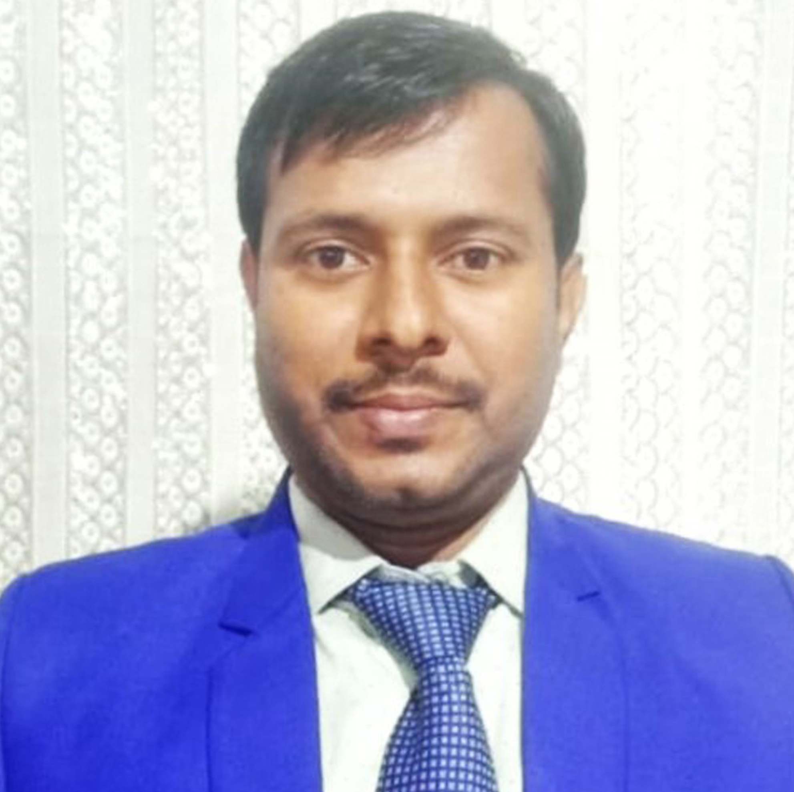

Research Scientist & Postdoctoral Researcher
Worked on Welding Technology, Composite Material, Additive Manufacturing and Artificial Intelligence for Defect Detection. Experienced in friction stir welding, finite element simulation, and deep learning-based NDT systems.
📞 Contact
📞 +91 9907993973
🔗 https://www.linkedin.com/in/dr-satya-kumar-dewangan-93767498/
🎓 Education
- PhD Metallurgical and Materials Engineering, NIT Raipur (2017-2023)
- M.Tech Mechanical Engineering (Production), CSVTU Bhilai (2012-2015)
- B.E. Mechanical Engineering, CSVTU Bhilai (2007-2011)
🏅 Key Expertise
📖 Research Interest
Welding metallurgy, AI-powered defect classification, dissimilar materials joining, computational mechanics, and sustainable manufacturing processes.
💼 Professional Experience
🔹 Institute Postdoctoral Fellowship - IIT Kharagpur (2026–Present)
- Artificial Intelligence for Defect Detection using CNN and Image processing.
- Developed AI defect detection model and automated control metal deposition of WAAM.
🔹 Post Doctoral Researcher - Testia (Airbus company) (2024–2025)
- Artificial Intelligence for Defect Detection in aviation NDT.
- Collaborating with NDT teams to identify critical defects using deep learning models.
- Develop automated inspection pipelines for ultrasonic & thermography data.
🔹 Project Associate - IIT Bhilai (2023–2024)
- Artificial Intelligence for Defect Detection using CNN architectures.
- Developed defect detection model for continuous casting billet (Bhilai Steel Plant).
- Improved detection accuracy by integrating image processing & transfer learning.
⚙️ Technical Skills & Tools
🏭 Industry Collaboration
Experience with NDT 4.0, and steel plant manufacturing analytics. Strong background in dissimilar alloy joining, interlayer techniques, and corrosion analysis.
📜 Patents
- Centrifugal casting device in induction furnace, Design, 2024, Design no. 420163-001
- A system and method for classification and location defects in bloom/billet manufacturing through continuous casting, Process, 2024, Application no. 202521000817
- Real time electrode material optimisation in rechargeable batteries using density functional theory integrated modelling, Design, 2024, Design no. 492140-001
📄 Peer-Reviewed Research Papers
- Material Flow Behavior and Mechanical Properties of Dissimilar Friction Stir Welded Al 7075 and Mg AZ31 Alloys Using Cd Interlayer, Metals and Materials International, 2022
- Effect of Vertical and Horizontal Zinc Interlayer on Material Flow, Microstructure and Mechanical Properties of Dissimilar FSW of Al 7075 and Mg AZ31 alloys, International Journal of Advance Manufacturing Technology, 2023
- Mechanical Properties and Corrosion Behaviour of Dissimilar Friction Stir Welded Al 7075 and Mg AZ31 Alloys with Cd and Zn Interlayer, Canadian Metallurgical Quarterly, 2024
- Synthesis and characterisation of Al 7075–Mg AZ31 alloy bimetal produced by friction stir additive manufacturing with Zn interlayer, Canadian Metallurgical Quarterly, 2024
- Effect of Welding speeds on Microstructure and Mechanical Properties of dissimilar friction stir welding of AA7075 and AA5083 Alloy, Materials Today: Proceedings, 2020
- Temperature distribution of Friction Stir Welding of Al 7075 alloy by finite element simulation along with experimental validation, Materials Today: Proceedings, 2023
- Material flow behavior and mechanical characterization of dissimilar FSW of Cu-Mg alloy joints, Materials Today: Proceedings, 2023
- Effect of assisted heating on microstructure, material flow and intermetallic formation during friction stir welding of copper alloy and AA 6063, Materials Today: Proceedings, 2023
- Study of Material Flow and Mechanical Properties of Friction Stir Welded AA2024 with AA7075 Dissimilar Alloys using Top-Half-Threaded Pin Tool, Trends in Sciences, 2021
- Effect of Zn interlayer on joint characteristics of dissimilar friction stir welding of Mg and Cu alloy, Welding in the world, 2025
📘 Book Chapters & Conference Proceedings
- Study of Microstructure and Mechanical Properties of Similar and Dissimilar FSW of Al 7075 and Mg AZ31 Alloys Without and With Zn Interlayer, Proc. International Conference on Metallurgical Engineering, 2023
- Mechanical and Corrosion Study of Dissimilar Friction Stir Welding of AZ31Mg Alloy and Cu-8Zn Alloy, Proc. International Conference on Metallurgical Engineering, 2023
📸 Research & Lab Gallery
Moments from advanced manufacturing, friction stir welding setup, and AI-based defect analysis.


🔬 Equipment & Methods
Friction stir welding machine, optical microscopy, SEM-EDS, Abaqus simulation, Python-based computer vision systems.
🏆 Honors & Recognitions
- Awarded – Doctoral 2023, NIT Raipur
- Awarded - IGSTC Industrial Fellowship 2024
- Awarded - IPDF 2026, IIT Kharagpur
🌐 Professional Membership
Indian Society for Technical Education (ISTE), Life Membership.